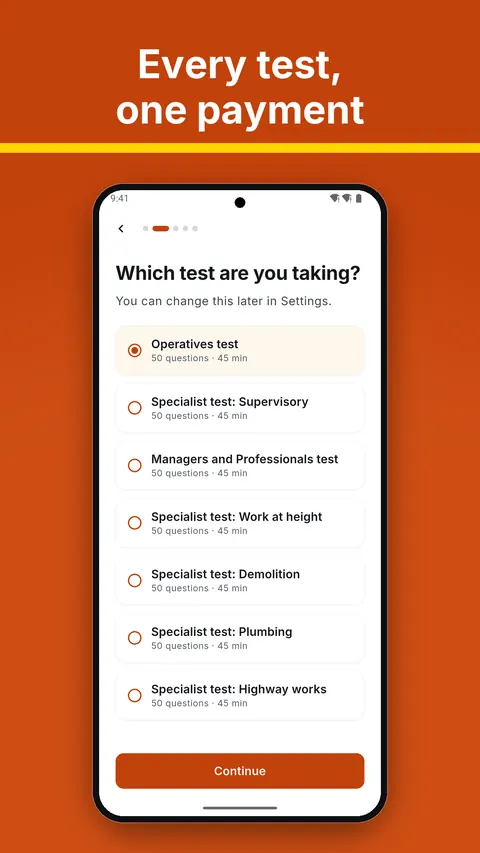

Not a government app. HiVis is an independent study app made by Kodfu Bilisim. It is not affiliated with or endorsed by CITB, CSCS, Pearson VUE or HSE, and it does not contain the real test questions.
Free and Pro
The free version is meant to be genuinely useful, so you can judge the questions before you pay anything.
Free
£0
- Three topics in full: PPE, safety signs and fire
- The first three questions of every other topic: 105 Operatives questions free in all
- One full mock test for each test
- All the tools: Card Finder, study plan, test-day checklist and Site words
HiVis Pro
£5.99 once
- All 841 questions, for every test level
- Every mock test
- One payment covers all seven tests
- No subscription
Android now; iPhone version not yet available.
What's in the app

50 questions in 45 minutes
Full mock tests in the format of the real test: 50 questions, timed at 45 minutes, with 45 to pass. Flag questions, come back to them and see your results by area.

Simple English, read aloud
Short, simple explanations say why the answer is right and where it comes from, such as HSE guidance. Read aloud works on every question, also in mock tests. Spaced review brings back the questions you got wrong.

Find the card you need
Not sure which test to take? The Card Finder suggests a CSCS card and the test to practise as a starting point. Card rules change, so check with CSCS before you book.

Every test, one payment
Operatives (389 questions), Supervisory, Managers and Professionals, and the Work at height, Demolition, Plumbing and Highway works specialist tests. HiVis Pro covers all of them for £5.99.
Get it on Google Play Try free questions first
Free guide and practice
- Free HS&E practice questionsOperatives test questions by topic, no sign-up
- HS&E test guideFormat, pass mark, booking, what ID to bring and how to prepare
Popular topics: working at height, safety signs, asbestos, manual handling and fire.
Support
HiVis helps you prepare for the CITB Health, Safety and Environment (HS&E) test with original practice questions, full timed mock tests and clear explanations. It works offline, has no account and no ads.
Contact us
Email gurkancaner@kodfu.com. Tell us your phone model and, if it is about a question, the question number shown under Report. We aim to reply within 2 working days.
Common questions
Are these the real test questions?
No. HiVis questions are original practice questions written from public health and safety guidance, such as HSE guidance. They cover the same topics in the same style as the real test, so they show you what you need to know.
Which test do I need?
It depends on the card you are applying for. The Card Finder in HiVis gives you a starting point, but card rules change, so check the CSCS website before you book.
Can I study in my language?
HiVis is written in simple English, with read aloud on every question, also in mock tests. The real test shows English text on screen, so learning the English words helps. Translations into other languages are planned.
Does HiVis Pro renew or charge me again?
No. Pro is a one-off payment that covers every test in the app. There is no subscription.
How do I restore my purchase on a new phone?
Sign in to the same Google account you bought with, open HiVis, go to Settings and tap Restore purchases. Your study progress is stored only on your old phone, so it does not move across.
I found a mistake in a question.
Thank you. Tap Report under the question in the app, or email us with the question number. We check every report and fix confirmed mistakes in the next content update.
Does it work without internet?
Yes. Every question, note and mock test is on your phone. You only need a connection to buy or restore Pro.
How do I turn reminders off?
In HiVis, go to Settings, then Your plan, and switch off Daily reminder. You can also turn off notifications for HiVis in your phone's settings.
How do I delete my data?
Your data is only on your phone. In HiVis, go to Settings and, under Your data, tap Reset progress. This deletes your answers, mock results, bookmarks, review schedule and plan, and keeps your Pro purchase. Deleting the app also removes everything. We hold no copy on any server.
The real test
HiVis is not the official test and cannot book it for you. Book the real test with CITB.
Practise every test in the HiVis app
841 original questions for the Operatives, Supervisory, Managers and Professionals and specialist HS&E tests, full timed mock tests of 50 questions in 45 minutes, simple explanations with read aloud, a study plan and spaced review. It works offline, with no ads and no account.
Free: three topics in full, three questions in every other topic, one full mock test for each test, the Card Finder and Site words.
HiVis Pro, £5.99 one-off: every question and every mock test for all test levels. No subscription.
Android now; iPhone version not yet available. HiVis helps you prepare; it cannot promise a pass.